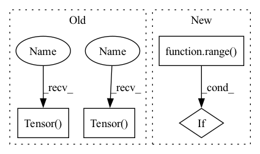

Pattern ID :1816
Before Change
w_percentile = np.percentile(w_copy, percentile)
b_percentile = np.percentile(b_copy, percentile)
new_w_mask = torch.Tensor( (w_copy >= w_percentile).astype(int))
new_b_mask = torch.Tensor( (b_copy >= b_percentile).astype(int))
self.w_mask = new_w_mask
self.b_mask = new_b_mask
self.w = torch.nn.Parameter(After Change
new_w_mask = np.zeros_like(w_copy)
new_b_mask = np.zeros_like(b_copy)
for task_num in range( self.num_tasks) :
if task_num != 0:
for prev_idx in range(task_num - 1):
w_copy[task_num][new_w_mask[prev_idx] == 1] = 0
b_copy[task_num][new_b_mask[prev_idx] == 1] = 0In pattern: SUPERPATTERN
Frequency: 3
Non-data size: 4
Instances Fragment ID: 8336429
Project Name: beyond-ml-labs/beyondml
Commit Name: 03dd7b87e47d75ba5a7317f31e1ff50b340898a7
Time: 2022-06-02
Author: 77127228+jacobrenn@users.noreply.github.com
File Name: mann/burning/layers/MultiMaskedConv2D.py
M Class Name: MultiMaskedConv2D
N Class Name: MultiMaskedConv2D
M Method Name: prune(2)
N Method Name: prune(2)
M Parent Class: torch.nn.Module
N Parent Class: torch.nn.Module
M File Name: mann/burning/layers/MultiMaskedConv2D.py
N File Name: mann/burning/layers/MultiMaskedConv2D.py
M Start Line: 98
M End Line: 107
N Start Line: 85
N End Line: 103
Before Change
groups = np.array(groups)
ids = np.unique(groups)
if method == "median":
X_profile = torch.Tensor( np.array([np.median(X[:, groups == ids[i]], axis=1) for i in range(len(ids))]).T)
else:
X_profile = torch.Tensor( np.array([np.mean(X[:, groups == ids[i]], axis=1) for i in range(len(ids))]).T)
return X_profile
class NNLS(nn.Module):After Change
if method == "median":
X_profile = np.array([np.median(X[[ i for i in range( len(groups)) if groups[i] == ct_select[j] ], :], axis=0) for j in range(len(ct_select))]).T
else:
X_profile = np.array([np.mean(X[[ i for i in range(len(groups)) if groups[i] == ct_select[j] ], :], axis=0) for j in range(len(ct_select))]).T
return torch.Tensor(X_profile) Fragment ID: 8336428
Project Name: omicsml/dance
Commit Name: 954e7fcd40b28b359d702e5d3da454b1a7c2ab58
Time: 2022-08-14
Author: venegas5@msu.edu
File Name: dance/modules/spatial/cell_type_deconvo/spotlight.py
M Class Name: AnonimousClass
N Class Name: AnonimousClass
M Method Name: cell_topic_profile(5)
N Method Name: cell_topic_profile(4)
M Parent Class:
N Parent Class:
M File Name: dance/modules/spatial/cell_type_deconvo/spotlight.py
N File Name: dance/modules/spatial/cell_type_deconvo/spotlight.py
M Start Line: 37
M End Line: 43
N Start Line: 19
N End Line: 43
Before Change
w_percentile = np.percentile(w_copy, percentile)
b_percentile = np.percentile(b_copy, percentile)
new_w_mask = torch.Tensor( (w_copy >= w_percentile).astype(int))
new_b_mask = torch.Tensor( (b_copy >= b_percentile).astype(int))
self.w_mask = new_w_mask
self.b_mask = new_b_mask
self.w = torch.nn.Parameter(After Change
new_w_mask = np.zeros_like(w_copy)
new_b_mask = np.zeros_like(b_copy)
for task_num in range( self.num_tasks) :
if task_num != 0:
for prev_idx in range(task_num - 1):
w_copy[task_num][new_w_mask[prev_idx] == 1] = 0
b_copy[task_num][new_b_mask[prev_idx] == 1] = 0 Fragment ID: 8336426
Project Name: beyond-ml-labs/beyondml
Commit Name: 03dd7b87e47d75ba5a7317f31e1ff50b340898a7
Time: 2022-06-02
Author: 77127228+jacobrenn@users.noreply.github.com
File Name: mann/burning/layers/MultiMaskedDense.py
M Class Name: MultiMaskedDense
N Class Name: MultiMaskedDense
M Method Name: prune(2)
N Method Name: prune(2)
M Parent Class: torch.nn.Module
N Parent Class: torch.nn.Module
M File Name: mann/burning/layers/MultiMaskedDense.py
N File Name: mann/burning/layers/MultiMaskedDense.py
M Start Line: 43
M End Line: 52
N Start Line: 40
N End Line: 58
Before Change
w_percentile = np.percentile(w_copy, percentile)
b_percentile = np.percentile(b_copy, percentile)
new_w_mask = torch.Tensor( (w_copy >= w_percentile).astype(int))
new_b_mask = torch.Tensor( (b_copy >= b_percentile).astype(int))
self.w_mask = new_w_mask
self.b_mask = new_b_mask
self.w = torch.nn.Parameter(After Change
new_w_mask = np.zeros_like(w_copy)
new_b_mask = np.zeros_like(b_copy)
for task_num in range( self.num_tasks) :
if task_num != 0:
for prev_idx in range(task_num - 1):
w_copy[task_num][new_w_mask[prev_idx] == 1] = 0
b_copy[task_num][new_b_mask[prev_idx] == 1] = 0 Fragment ID: 8336422
Project Name: beyond-ml-labs/beyondml
Commit Name: 03dd7b87e47d75ba5a7317f31e1ff50b340898a7
Time: 2022-06-02
Author: 77127228+jacobrenn@users.noreply.github.com
File Name: mann/burning/layers/MultiMaskedConv2D.py
M Class Name: MultiMaskedConv2D
N Class Name: MultiMaskedConv2D
M Method Name: prune(2)
N Method Name: prune(2)
M Parent Class: torch.nn.Module
N Parent Class: torch.nn.Module
M File Name: mann/burning/layers/MultiMaskedConv2D.py
N File Name: mann/burning/layers/MultiMaskedConv2D.py
M Start Line: 98
M End Line: 107
N Start Line: 85
N End Line: 103